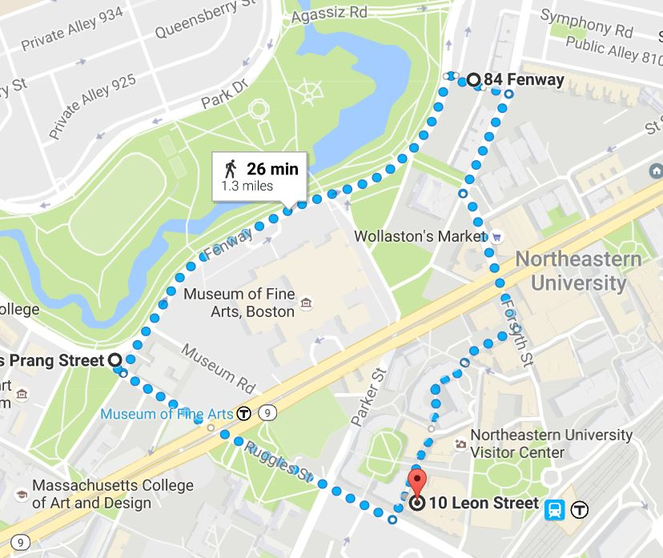

<ion-view title="Run History" id="page9">
  <ion-content padding="true" class="has-header">
        
    <!--<div class="list card" id="runHistory-card24">
      <div style="margin: 0px; line-height: 250px; background-color: rgb(232, 235, 239); text-align: center;">
        <i class="icon ion-image" style="font-size: 64px; color: rgb(136, 136, 136); vertical-align: middle;"></i>
        

      </div>-->
        
      <ion-item class="item-avatar assertive" id="runHistory-list-item12">
        <h2assertive>Loss: 10/29/16 at 3:00 pm
          <p>1.3 miles - 12:00 min</p>
        </h2assertive>
      </ion-item>
    </div>
    <div class="spacer" style="width: 300px; height: 29px;"></div>
  </ion-content>
</ion-view>